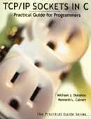

|  | Several people have asked about a C++ equivalent to "TCP/IP Sockets in C: Practical Guide for Programmers" by Michael J. Donahoo and Kenneth L. Calvert, which can be ordered at your favorite local bookstore or online (Official Book Website). Unfortunately, there is no standard C++ library for Sockets. Several third-party libraries do exist. We provide a partial list below. Note that this is not an endorement of these particular libraries. Send us email if you have other libraries that need to be listed. |
We also have developed our own C++ materials. These materials are purely for instructional purposes, not for production.